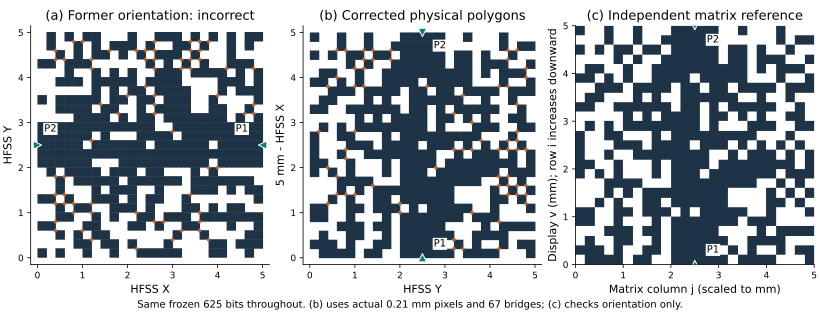

內部證據稽核 · 2026-10-04 · 重新由原始碼、既有交付圖及既有求解資料核對
圖形為何差了 90°，以及如何避免再次出錯
1. 三份獨立證據指向同一方向
以下行號依本次核對的工作樹。記憶檔提供先前錯誤背景，真正的物理軸與埠身分另由模擬器建立幾何及指定埠的程式碼確認；既有報告圖再確認讀者看到的方向。
| 來源 | 核對內容 | 結論 |
|---|---|---|
| reference_pattern_render_convention.md，第 13–24 行；script/figs/README.md，第 3–4 行 | 既有論文／報告使用 imshow(mat, origin="upper")；第一索引 i 朝下，j 朝右；2026-08-06 曾發生同類 90° 錯誤。橋位必須使用同源函式。 | 新圖必須遵循既有方向，不能自行另立視角。 |
| single_port.py，第 339、347–354 行；dual_port.py，第 384、391–401 行 | pixel_matrix[x][y] 的第一索引乘 pixel_H 成為 XPosition，第二索引乘 pixel_W 成為 YPosition；金屬方塊尺寸沿正 X、正 Y 各增加 0.01 mm。 | 矩陣 i = HFSS X 軸，j = HFSS Y 軸。p01 方塊為 0.21 × 0.21 mm，不能只改錨點而保留錯誤的延伸方向。 |
| single_port.py，第 479–481 行；script/diffsim/geom.py，第 6–12、86–109 行；docs/diffsim.md「已考證的幾何事實」 | 單埠積分線位於 (X,Y) = (27.5,2.5) mm。SAB 解析紀錄給出饋線 X ∈ [5,27.5]、Y ∈ [1.95,3.05] mm，接在像素區 X = 5 邊。 | 單埠 P1 從第一索引最大側饋入；顯示慣例下位於圖下方。SAB 紀錄用於幾何核對，不採用 diffsim 其餘近似物理推論。 |
| dual_port.py，第 541–556、572–588 行 | 埠名稱 1 對應 Rectangle1、積分線 X = 12.5 mm；埠名稱 2 對應 Rectangle2、積分線 X = −7.5 mm；Y 皆為 2.5 mm。 | 雙埠 P1 接 X = 5 邊，顯示於下方；P2 接 X = 0 邊，顯示於上方。不能只憑饋線位置猜埠名。 |
| report_r1r10_style.py，第 50–57 行；handoff_pack.py，第 250–255、383–394 行 | 共用 show_pattern 用 origin="upper"，feed=(24,12)；雙埠另加 (12,0) 上方三角；橋中心以 (cy/p−0.5,cx/p−0.5) 疊加。 | 單埠下饋入、雙埠上下饋入的報告慣例與模擬器埠身分吻合。 |
本次亦直接重跑既有 sab_probe 的純解析函式，讀取兩個本地 SAB 二進位檔，沒有開啟 HFSS。單埠 z=0.543 mm 的頂面座標外框為 X=[5,27.5]、Y=[1.95,3.05] mm；雙埠同高度的整體外框為 X=[−7.5,12.5]、Y=[1.95,3.05] mm。這個簡易 probe 只能提供各高度的整體座標外框，不辨識每個 ACIS body 的埠名稱；P1/P2 命名仍以模擬器的 AssignLumpedPort 為準。
| 已直接解析的檔案 | SHA-256 |
|---|---|
| single_port.sab | 02a296a0b9a53a94c802a719997d707d789be43d2552a830869458b275cff902 |
| dual_port.sab | 47e12602d2513e74a30d5826425efaaa5b1fcf77c5a8ac990265e56149735ba0 |
2. 精確轉換：旋轉顯示座標，不轉動設計資料
論文圖：u = Y，v = 5 − X（mm）
線性部分 [[0,1],[-1,0]]，det = +1；為順時針 90° 旋轉後平移，沒有鏡射。
每個像素先依模擬器建立物理四角 (X,Y)、(X+s,Y)、(X+s,Y+s)、(X,Y+s)，其中 s=0.21 mm，再逐頂點套用轉換。所得顯示左下角為 (0.2j, 5−0.2i−0.21)。記憶檔中的簡式 (jP,(24−i)P) 適用於邊長等於節距的 0.20 mm 格子；若直接套在 p01 的 0.21 mm 方塊上，會多出 0.01 mm 的垂直錯位。因此本次不以簡式放置 Rectangle。
| 對象 | 矩陣／HFSS | 論文圖 (u,v) | 可見位置 |
|---|---|---|---|
| 第一格名義中心 | (i,j)=(0,0)；(X,Y)=(0.1,0.1) | (0.1,4.9) | 左上 |
| 最後列第一格名義中心 | (i,j)=(24,0)；(X,Y)=(4.9,0.1) | (0.1,0.1) | 左下 |
| 第一列最後格名義中心 | (i,j)=(0,24)；(X,Y)=(0.1,4.9) | (4.9,4.9) | 右上 |
| p01 最後列方塊邊界 | X ∈ [4.8,5.01] | v ∈ [−0.01,0.2] | 正確保留超出名義 5 mm 網格的 0.01 mm 重疊延伸 |
| 單／雙埠 P1 的像素區連接處 | (X,Y)=(5,2.5)；實際埠平面在區外正 X 側 | (2.5,0) | 下緣，向上三角 |
| 雙埠 P2 的像素區連接處 | (X,Y)=(0,2.5)；實際埠平面在區外負 X 側 | (2.5,5) | 上緣，向下三角 |
| 菱形橋中心 | 同源函式回傳 (cx,cy,w) | (cy,5−cx)，四頂點亦各自轉換 | 中心與金屬像素使用同一映射；不重寫接點偵測 |
橋的位置使用 single_port.py:25–54 的 diag_bridge_sites，與雙埠模擬器第 425–449 行相同。w 是旋轉前正方形邊長，菱形水平或垂直對角長為 √2w；不是把 w 當成菱形對角長。程式透過 AST 僅載入這個純函式，不匯入模擬器、不啟動 HFSS。
3. 不對稱原設計的肉眼對照

smp073_d_040 的同一份 625 位元，未旋轉或重寫資料。(a) 重現舊圖錯誤：P1 在右。(b) 精確轉換像素與 67 座橋後，P1 在下、P2 在上。(c) 以獨立 imshow(bits, origin="upper") 顯示的名義格子；它只核方向，因此不畫 0.01 mm 延伸及菱形橋。左右不對稱的孔洞與支臂在 (b)、(c) 對位。可點图開啟原尺寸 SVG。另外已逐張查看既有 雙埠交付圖第 1 頁、單埠交付圖第 1 頁：雙埠第一列與修正後的同一設計方向一致，單埠第一列的上方大缺口與下方饋入亦一致。既有交付圖用名義格子及橋位標記，不能拿它代替本次精確重疊多邊形的尺寸檢查。


4. 恢復單埠天線的正面結果，並把批次來源分開
研究包含單埠天線與雙埠濾波器。前稿只充分繪出雙埠曲線，缺少單埠天線的 S11、實現增益與方向圖，令應用範圍失衡。本次選用已正式交付重測的 ANT_F00_1_c48nq1p06_18~db100，以同一 store 的輸入、頻率響應、方向圖及 results 記錄重建三張圖。
| 量 | 正式 handoff 同源結果 | 與歷史數字的區別 |
|---|---|---|
| 單埠幾何 | 25×25 位元；0.2 mm 節距、0.21 mm 金屬邊長；12 座 0.1 mm 正方形邊長的菱形橋 | 原位元與 R54 快取逐一比對一致；不是未橋接設計。 |
| 帶內頻率響應 | 26.5–29.5 GHz 的 7 個採樣點：S11 ≤ −10 dB，boresight RealizedGainTotal ≥ 4 dBi；兩項餘裕 +1.13、+0.77 dB，最差 +0.77 dB | R54 原批同圖形記錄 +0.69 dB；正式交付重測為 +0.77 dB，差 +0.08 dB。图上曲線只配正式重測餘裕，沒有把原批評分配重測曲線。 |
| 28 GHz 方向圖 | GainTotal，Setup1 : LastAdaptive；φ=0°、90° 各自相對 θ=0° 正規化；採樣窗餘裕 +0.63、+0.50 dB | 不是 RealizedGainTotal 頻率掃描曲線。原始 θ 每 2° 一點，|θ|≤45° 的實際端點為 ±44°，未補造 ±45° 樣本。 |
| 歷史未橋接冠軍 | c48nq1p05_16 曾有 +0.79 dB 記錄 | 另一個圖形、未橋接評估；不可稱為本代表設計的橋前結果，也不可與 +0.77 dB 拼成一組受控前後比較。 |
凍結檔：single-port-evidence.json；擷取器：extract_single_port_evidence.py。擷取器唯讀掃描正式 store 的 21 個回傳檔，找到唯一一份與輸入全部 625 位元一致的 2×17 響應，另核對兩個既有位圖快取別名。輸入、頻率響應、方向圖、正式 results、原批 results、setup overrides 共六份來源均保存 SHA-256；原始資料與衍生值一起保留。
方向圖保留 HFSS 原始 φ 標籤，不因幾何圖換顯示方向而交換 φ=0° 與 φ=90°，亦不在未確認極化定義下把兩切面改叫 E/H-plane。只有像素幾何繪圖需要本次座標修正；頻率曲線和原始輻射座標不可一起旋轉。
5. 可重做的防錯檢查與限制
build_figures.py 已加入獨立四角與兩埠位置斷言、旋轉行列式 +1 的非鏡射檢查、全部 625 個名義格中心與 origin="upper" 的對位檢查，以及逐像素 0.21 mm 多邊形最小頂點與 −0.01 mm 延伸檢查。雙埠 67 橋、單埠 12 橋皆由同源函式得到且無跳過；原始 bits、頻率餘裕及方向图窗餘裕另行核對。方向圖明確固定 −180° 至 +180° 全圓範圍，避免帶正負號刻度意外裁切極座標。
已重建七組正文 SVG／PNG：單埠幾何、S11／實現增益、正規化方向圖；雙埠幾何、S 參數、歷史最佳包絡、R73 回饋。另存本頁三聯方向稽核圖。舊 candidate.svg/png 合成圖含錯向幾何，應由新版圖資目錄移除；舊版由 Git 歷史保存，不得再插入新稿。
本次沒有新增求解或訓練。NAS 正式 setup 檔僅含橋寬、逾時與保留 project 的覆寫值，不能宣稱它就是完整歷史求解設定封存；正餘裕是既有指定採樣判準的結果，不等同連續頻率／角度的全域保證或完成網格收斂。幾何圖省略外部饋線、埠面、基板與地平面，亦非完整製造圖。